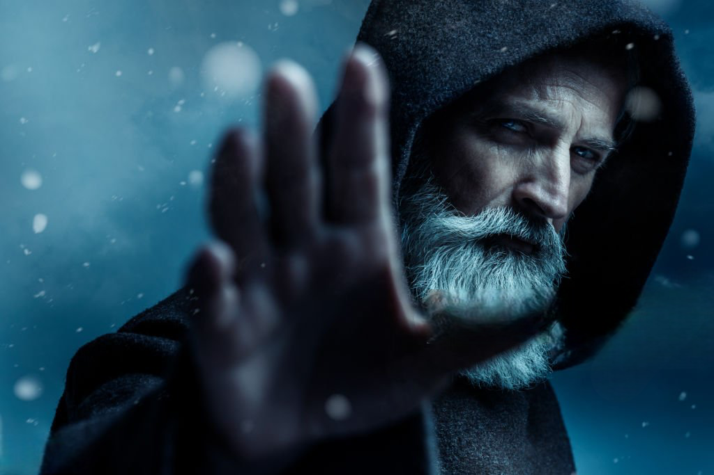

Hechizos y Pociones
Un breve análisis de algunos de los hechizos y pociones más interesantes
Leer más
La magia, ese arte milenario que ha cautivado a la humanidad desde tiempos inmemoriales, representa la búsqueda eterna del ser humano por trascender los límites de lo posible. A través de los siglos, ha evolucionado desde rituales sagrados hasta convertirse en un sofisticado arte escénico que continúa maravillando a audiencias en todo el mundo.
En el antiguo Egipto, los magos eran venerados como intermediarios entre dioses y mortales. Sus trucos, documentados en papiros milenarios, mezclaban ilusionismo con rituales religiosos. Esta tradición se transformó durante la Edad Media, donde la magia sobrevivió en las cortes reales como entretenimiento refinado.
En el antiguo Egipto, los magos eran más que simples entertainers; eran sabios y consejeros de los faraones, respetados por su aparente capacidad para comunicarse con los dioses. Uno de los trucos más antiguos documentados se encuentra en el Papiro Westcar, que data del 2700 a.C., describiendo un mago que supuestamente decapitó y luego reanimó a un animal.
"La magia es el único arte honesto: nunca pretende ser otra cosa que una ilusión pura." - Harry Houdini
Durante la Edad Media, la percepción de la magia experimentó cambios drásticos. Los ilusionistas a menudo eran vistos con sospecha, confundidos con practicantes de brujería. Sin embargo, en las cortes reales, los bufones y juglares incorporaban trucos de magia en sus actuaciones, sentando las bases para el futuro de la magia como entretenimiento.
El siglo XIX marcó un punto de inflexión para el arte de la magia. Figuras pioneras como Jean-Eugène Robert-Houdin, considerado el padre de la magia moderna, elevaron este arte a nuevas alturas. Robert-Houdin transformó la imagen del mago, pasando de las túnicas místicas a trajes elegantes, y combinando habilidad técnica con presentación teatral.
A finales del siglo XIX y principios del XX, la magia experimentó su "Era Dorada". Magos como Harry Houdini, Howard Thurston y Harry Kellar se convirtieron en celebridades internacionales. Houdini, en particular, captó la imaginación del público con sus espectaculares escapes y su cruzada contra los médiums fraudulentos.
"Lo que el ojo ve y el oído oye, la mente cree." - Harry Houdini
En el siglo XX y XXI, la magia ha continuado evolucionando. Artistas como David Copperfield, Penn & Teller, y David Blaine han llevado el arte a nuevos niveles, fusionando la tradición con la tecnología moderna. La magia callejera, popularizada por artistas como David Blaine, ha revitalizado el interés en el ilusionismo a pie de calle.
Hoy en día, la magia sigue cautivando audiencias en todo el mundo. Desde espectáculos de gran escala en Las Vegas hasta actuaciones íntimas de magia de cerca, el arte de la ilusión continúa desafiando nuestras percepciones y estimulando nuestra imaginación. La Academia de Artes Mágicas en Hollywood, fundada en 1963, sirve como un testimonio del continuo respeto y fascinación por este arte milenario.
En conclusión, la historia de la magia es un reflejo de nuestra eterna fascinación por lo imposible y lo maravilloso. A través de los siglos, ha evolucionado desde rituales místicos hasta una forma de arte sofisticada, siempre manteniendo su capacidad para asombrar, entretener y desafiar nuestras percepciones de la realidad.

Merlín emerge de las brumas de Avalon como la personificación suprema de la sabiduría mágica. Más que un simple hechicero, representa la fusión perfecta entre el conocimiento terrenal y la sabiduría mística, siendo el puente entre el mundo mortal y el reino de lo sobrenatural.
Su influencia trasciende los siglos, inspirando a generaciones de artistas, escritores y soñadores. En cada época, su figura se reinventa, pero mantiene la esencia del sabio que guía a la humanidad hacia su potencial más elevado.
Merlín, el enigmático mago del ciclo artúrico, sigue siendo una de las figuras más influyentes en la mitología y la magia occidental. Su origen, a veces atribuido a una mezcla de humano y demonio, lo convierte en un personaje misterioso con poderes extraordinarios. Conocido como profeta, hechicero y consejero del rey Arturo, su papel va más allá de la simple magia: es un mediador entre el mundo real y el mágico, un guía a través de los misterios de la vida. Merlín encarna la sabiduría y el conocimiento de lo oculto, utilizando sus poderes para influir en el destino de un reino y en la formación de una leyenda que ha trascendido los siglos.
Merlín es una de las figuras más icónicas y misteriosas de la mitología artúrica. Conocido como el consejero y protector del Rey Arturo, este poderoso mago ha cautivado la imaginación de generaciones con sus habilidades mágicas y su sabiduría.
Aunque los orígenes exactos de Merlín son objeto de debate, muchas leyendas lo describen como hijo de un demonio y una mujer mortal. Esta dualidad en su naturaleza explicaría sus extraordinarios poderes y su profundo conocimiento del universo.
"Merlín es la quintaesencia del mago occidental: un hechicero sabio de barba poblada, conocedor de los más recónditos misterios del universo."
Según las leyendas, Merlín poseía habilidades asombrosas, incluyendo:
Merlín desempeña un papel crucial en la leyenda del Rey Arturo, siendo su mentor y consejero. Su influencia se extiende desde la concepción de Arturo hasta su ascenso al trono, guiándolo para convertirse en un rey justo y sabio.
La leyenda cuenta que Merlín encontró su fin a manos de su aprendiz, Nimue, también conocida como la Dama del Lago. Enamorado de ella, le enseñó sus secretos mágicos, solo para ser finalmente aprisionado por ella en una jaula de cristal o en un árbol, según las diferentes versiones.
Merlín sigue siendo una figura fascinante que continúa inspirando la literatura, el cine y la cultura popular, simbolizando la sabiduría, la magia y el misterio en el imaginario colectivo.
Un breve análisis de algunos de los hechizos y pociones más interesantes
Leer más
Conoce un poco más acerca de los elementos, su significado e importancia
Leer más
Un recorrido por algunos de los mejores ejemplos de magia en el cine
Leer más
Descubre las fascinantes historias y seres que pueblan las leyendas de todo el mundo.
Leer más| Año | Nombre | Conocido por | Foto |
|---|---|---|---|
| Siglo VI | Merlín | Profeta y mago de la corte del rey Arturo | |
| Siglo XVI | John Dee | Matemático, astrónomo y mago alquimista |  |
| Siglo XVIII | Alessandro Cagliostro | Famoso mago, ocultista y alquimista |  |
| Siglo XIX | Harry Houdini | Ilusionista y escapista |  |